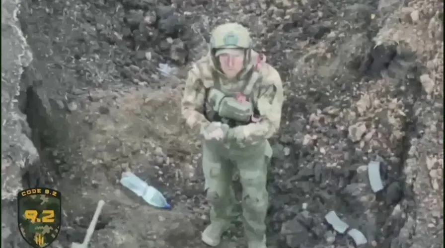

The first battlefield surrender to unmanned systems
Originally posted on LinkedIn, August 7, 2025.
For the first time in history, soldiers surrendered to robots.
Near Kharkiv in eastern Ukraine, an experimental unit called "DEUS EX MACHINA" launched an attack without a single soldier taking part. A one-way attack ground robot opened the operation by exploding against a Russian bunker. Another robot then approached the position, leading the surviving Russian soldiers to surrender. Drones flying overhead escorted the prisoners of war back, coordinating their movement through a live aerial feed.
The attack sounds like science fiction, but it marks a shift in both military thinking and operations. For the first time, a combat unit captured enemy positions using only unmanned systems.
On the surface, this was a small event: a handful of soldiers surrendering to electronic systems while cameras recorded it. In practice, it was the first real operation of its kind in an environment that many countries have only simulated. No soldier was physically present on the ground to conduct the attack.
It was also a live demonstration of asymmetric strategy. Cheap technologies such as FPV drones and ground robots created a local advantage over a stronger enemy.
Ukraine has become a testing ground for the next era of warfare. These are no longer smart tools that merely assist a human soldier. We are seeing the start of a process in which the combat system operates on its own, makes decisions, and replaces people not only in defense but also in offensive action.
If it works, it will save lives. If it develops further, we will need to rethink responsibility, morality, and control. That responsibility will not sit only on the battlefield, but also with the person whose finger is on the keyboard.
